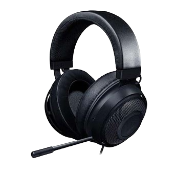
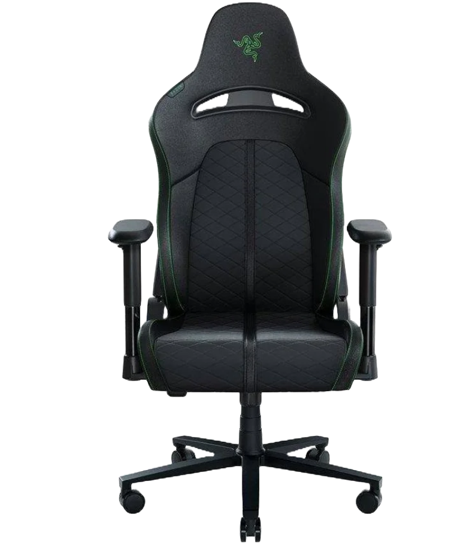
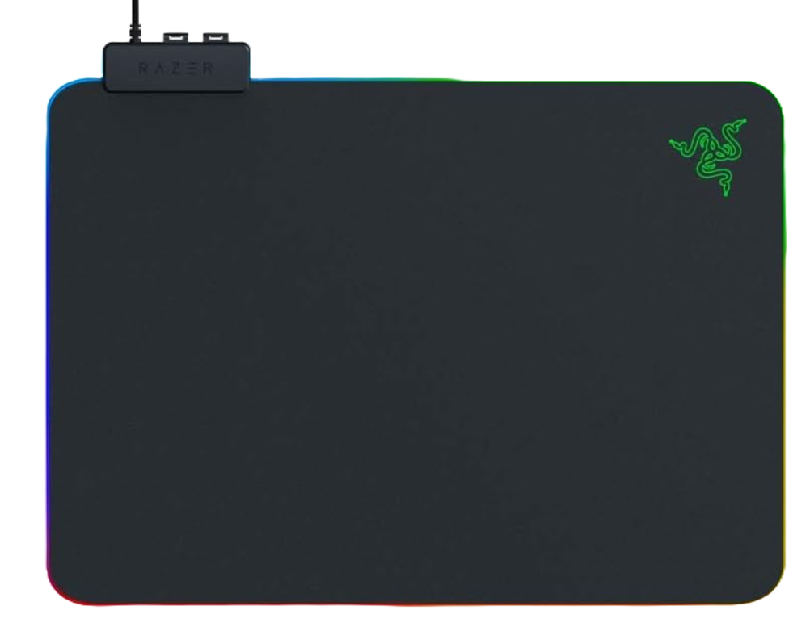
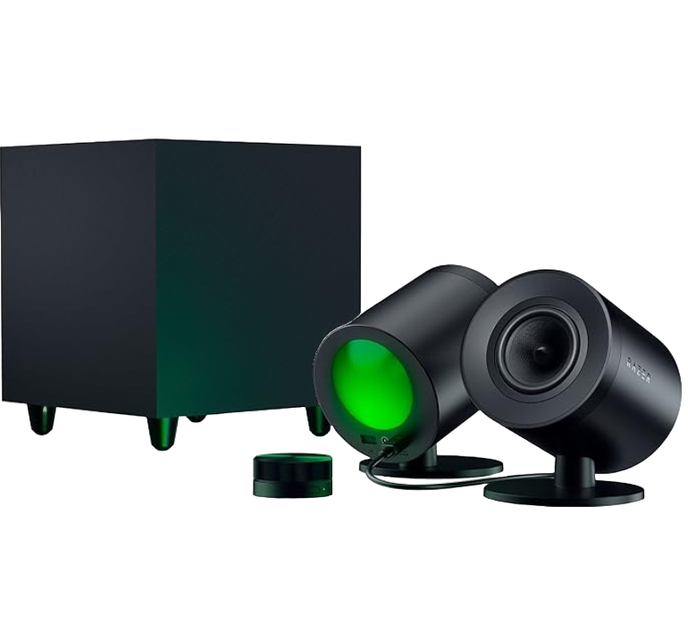
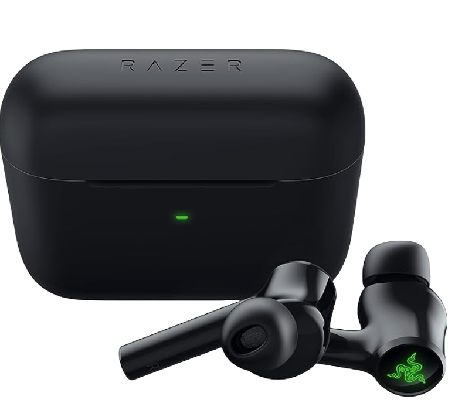
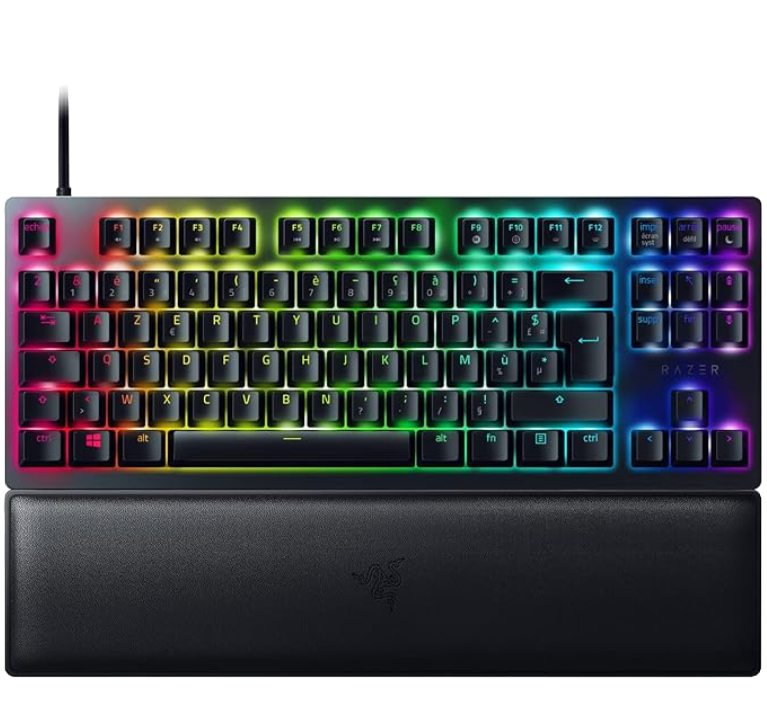

|
Razer Raptor 27"
930,21€
Frecuencia de actualización de 165 Hz en una pantalla QHD Para un juego ultrafluido en alta resolución:
con la actualización ultrarrápida hasta 165 Hz y la resolución QHD (2560x1440 píxeles) ahora tienes más
fotogramas para suavizar tu juego y refinar tu experiencia.
|

|
Razer DeathAdder
30,21€
Sensor óptico de alta precisión de 6400 DPI: proporciona un ajuste de sensibilidad personalizado mediante teclas DPI dedicadas
(reprogramables) para juegos y trabajo creativo. Interruptores mecánicos duraderos: admite hasta 10 millones de clics
|

|
Razer Huntsman Mini
90,21€
Switches ópticos Razer: Ofrece un accionamiento rápido, ligero y fluido que los switches mecánicos, así como óptima
durabilidad ya que necesita menos piezas móviles que funcionan con menos fricción; Disponible en dos variantes: lineal
y con sonido click
Teclas de PBT de doble inyección con funciones secundarias impresas en el lateral: Diseñado para una óptima durabilidad,
no se va a deteriorar nunca con un acabado brillante ni se van a desgastar las etiquetas por el uso intenso; Funciones
secundarias impresas en el lateral para facilitar la referencia
|
|

|
Razer Kraken X
39,99€
Desde su creación, los Razer Kraken han forjado su reputación como un clásico de culto
en la comunidad gamer. Han dejado su huella como un básico en innumerables eventos de juegos,
convenciones y torneos. Ahora hemos mejorado las prestaciones de este ídolo de masas y no solo
le hemos dado un impulso a la calidad de sonido, sino que además los hemos hecho más cómodos para
que puedas jugar todo el día con los auriculares que tanto adoras. Estos son los nuevos Razer Kraken.
|
|

|
Razer Enki
569,99€
Gracias a la combinación de sus exclusivos arcos extendidos para hombros de 110 grados y un
asiento ultraancho de 21", la silla de juegos Razer Enki garantiza una óptima distribución del
peso para ofrecer una comodidad duradera durante las largas sesiones de juego.
|
|

|
Razer Firefly V2
69,99€
Alfombrilla para ratón gaming microtexturizada con iluminación RGB.
Más fina, más brillante, mejor; sube de nivel con Razer Firefly V2. Su diseño ultrafino presenta
más modos de iluminación gracias a su tecnología Razer Chroma con iluminación RGB mejorada, manteniendo
tu precisión intacta con una superficie microtexturizada y una firme base de goma antideslizante.
|
|

|
Razer Nommo V2 Pro
469,99€
Altavoces Gaming de Rango Completo 2.1 para PC con Subwoofer Inalámbrico (Diafragmas de Gama
Completa de 3 pulgadas con Correctores de Fase de Aluminio, THX Spatial Audio) Negro.
|
|

|
Razer Hammerhead Pro HyperSpeed
169,99€
Auriculares inalámbricos para Juegos con Razer Chroma RGB (inalámbricos HyperSpeed,
cancelación Activa de Ruido, Chroma RGB, Bluetooth 5.3) Negro
|
|

|
Razer Huntsman V2 Tenkeyless
269,99€
Teclado óptico para Juegos Numpadless (interruptores ópticos de Sonido, Cable Tipo C
Desmontable, reposamuñecas ergonómico) Teclado AZERTY | Negro
|